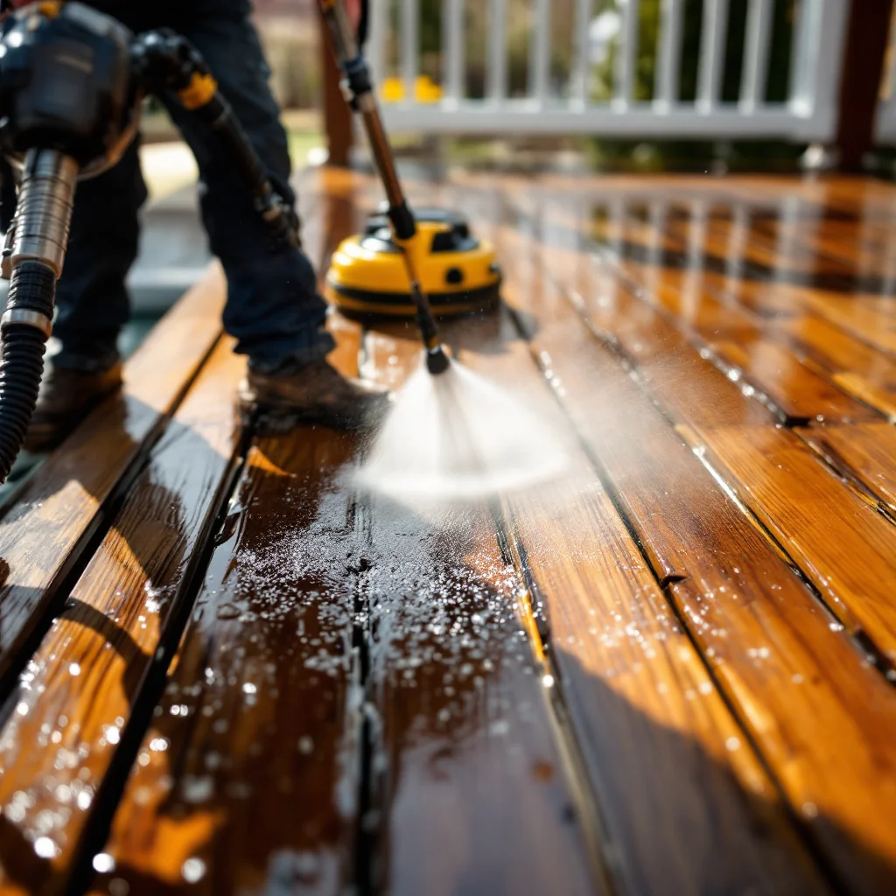

Deck Cleaning in Knoxville, TN

Safe, Effective Deck Pressure Washing
Knoxville's warm, humid climate is hard on decks. Wood decks develop gray weathering, green algae, and mildew; composite decks get slippery film and discoloration. Professional deck cleaning restores the look and extends the life of your outdoor living space.
We adjust our pressure settings and cleaning solutions based on your deck material — never using more pressure than the surface can handle. This prevents the splintering and furring that DIY pressure washing often causes on wood decks.
Deck Cleaning Services
- Wood deck cleaning (pine, cedar, redwood)
- Composite deck cleaning (Trex, TimberTech, etc.)
- Deck stain prep and stripping
- Railing and stair cleaning
- Pergola and gazebo cleaning
Pricing
Deck cleaning in Knoxville typically ranges from $175–$400 depending on size and condition. Stain prep work may be additional. Check our cost guide for details.
Planning to stain or seal your deck? Cleaning first is essential for proper adhesion. Schedule your deck cleaning today.